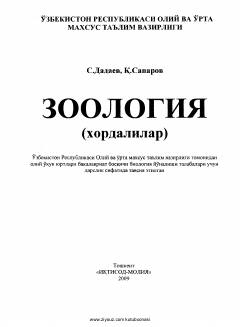

ZXXordali hayvonlar zoologiyasi va umurtqalilar sistematikasiga bag'ishlangan Oliy ta'lim darsligi.
Ushbu darslik oliy o'quv yurtlarining biologiya yo'nalishi talabalari uchun mo'ljallangan bo'lib, xordali hayvonlar zoologiyasi, ularning tuzilishi, xilma-xilligi, ekologiyasi va sistematikasini o'rganadi. Shuningdek, kitobda O'zbekiston fauna olami, noyob va yo'qolib borayotgan turlarni muhofaza qilish masalalari ham yoritilgan.